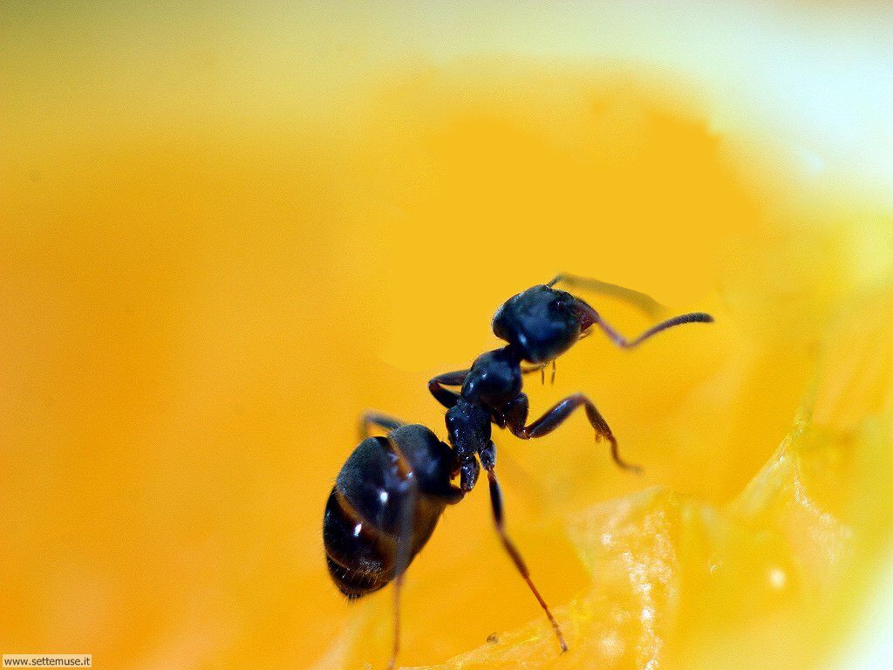

Lo studio dei fenomeni e la manipolazione dei materiali appartenenti a una scala nanometrica (tra 1 nm e 100 nm).
In media una formica misura (in larghezza) ~ 2mm = 2'000'000 nm
The grandest dream of nanotechnology is to be able to construct with the atom as the building block.
Principio di indeterminazione di Heisenberg
Principio di sovrapposizione
Entanglement quantistico
Nel 1997 Dustin W. Carr creò una chitarra grande ~ 10µm = 10'000 nm.
L'intero strumento è grande quanto un globulo rosso.
Gli ioni di ferro rilasciati dalle nanoparticelle uccidono i batteri.
Il filtro può rimuovere anche arsenico, pesticidi, piombo e altri metalli pesanti.
Portata: 10 l / h
Strato monoatomico di atomi di carbonio
Estremamente forte e leggero
Ottimo conduttore (⇒ transistor)
Struttura particolare (consente per esempio l'osmosi inversa)
Grazie per l'attenzione!